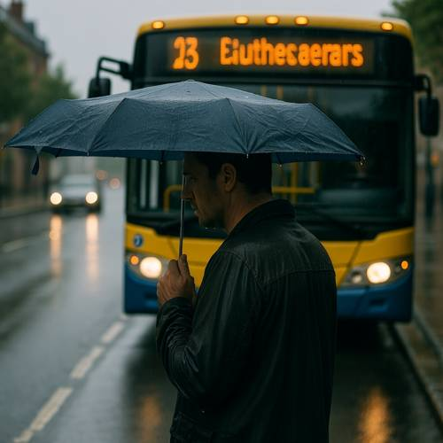
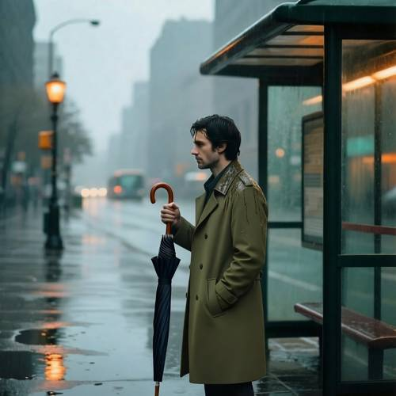
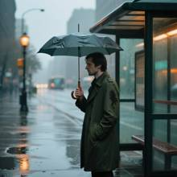
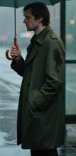
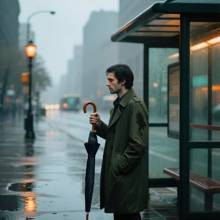
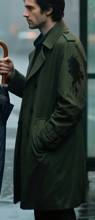
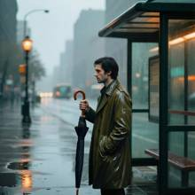
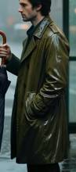
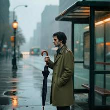
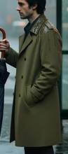

Logical Reasoning — On the street after the rain, a man stood alone in front of the bus st
On the street after the rain, a man stood alone in front of the bus stop. The umbrella in his hand was dry, but his shoulders were wet.

Direct — one call, no iteration

Continuum — Qwen3.8-27B + Qwen-Image
Judge — Direct
FAILLogical Reasoning — The image shows a man holding an umbrella that has visible water droplets on its surface, indicating that it is wet, not dry. The man's jacket, including his shoulders, also appears to be wet. Therefore, the logical condition of a dry umbrella and wet shoulders is not met.
FAILEntity Layout - Three-Dimensional Space — The image shows a man standing on a street with a bus in the background. There is no visible bus stop, such as a shelter or a signpost. The man is positioned in front of a bus, but not verifiably in front of a bus stop.
Judge — Continuum
PASSLogical Reasoning — The man is holding a closed umbrella that appears dry, as its fabric is smooth and not glistening with water. In contrast, the shoulders of his green coat are visibly wet, with dark, damp patches and what look like water trickles running down from them.
PASSEntity Layout - Three-Dimensional Space — The image displays a man standing on the sidewalk. Immediately to his right is a structure with a roof, glass panels, and a bench, which is identifiable as a bus stop shelter. The man's position is adjacent to this shelter, placing him in front of the bus stop area.
What the agent did
Thinking
Let me think about this prompt. It's a literary/atmospheric scene: after the rain, a street, a man standing alone in front of a bus stop, holding a dry umbrella, with wet shoulders. This is a classic image — an intriguing detail: even though the umbrella is dry, his shoulders are wet (suggesting that he walked in the rain without opening the umbrella). I should generate an image that captures this. Visual details: rainy street, wet pavement with puddle reflections, a bus stop (bus shelter, sign), a lone man standing under the shelter (or in front of the bus stop), holding a closed dry umbrella (dry means it's folded and held in the hand, not open), wet shoulders — a darkened wet patch on the shoulders/upper part of the coat, hair may be slightly damp. Moody atmosphere, overcast light, ripples in puddles, reflections of streetlamps. Important: the umbrella must be closed/dry (held in the hand), and the shoulders must be wet (a dark wet patch on the shoulders of his jacket). This is the central contrast of the prompt. Let me generate with qwen-image (following the fixed model policy). Then check, edit if necessary, and mark the best. Composition: a vertical-leaning or horizontal street scene. A man standing under a bus shelter, or near a bus stop sign, on a wet street after the rain, holding a closed umbrella (dry, maybe dripping? no — dry), wearing a coat with dark wet patches on the shoulders. Overcast sky, puddles, reflections, moody color tones. First, let me write a strong generation prompt: "On a city street after the rain, a lone man standing in front of a bus stop shelter, holding a closed dry umbrella in his hand, wearing a dark coat with the shoulders darkened from rain, wet ripples in the pavement and puddles reflecting a gray overcast sky, moody cinematic light, street lamps, realistic photographic style" I should be careful about the wet shoulders — the model might not understand. Maybe I should say "rain-dampened dark patch on the shoulders of the coat, wet hair sticking to his forehead." That should be sufficient. Let me generate first, then check with inspect_region (shoulders, umbrella), then edit if necessary. Size: the default is 1024x1024. That's fine. Let's begin.
Step 1 — `generate_image`
{
"prompt": "Cinematic realistic photograph of a city street after rain, a lone man standing in front of a bus stop shelter, seen from three-quarter distance. He holds a closed, perfectly dry umbrella in his right hand, its fabric still dry and creased. He wears a dark olive coat whose shoulders are visibly soaked, darkened with wet patches from the rain, and his hair is damp. The pavement is wet and glistening with puddles mirroring the gray overcast sky, the bus shelter's glass reflecting light, a blurred city street behind, soft diffused dusk light, melancholic quiet mood, shallow depth of field, muted color palette of gray, teal and warm amber from a street lamp.",
"model": "qwen-image"
}
Result img_0

Thinking
In the image, the man is holding an "open" umbrella. This contradicts the prompt: the umbrella in his hand should be dry — that is, closed/folded (an open umbrella being held overhead should be getting wet, or at least the scene doesn't match). The key detail is "the umbrella in his hand is dry, but his shoulders are wet" — the classic implication is that he walked in the rain while carrying the umbrella closed, and only opened it after reaching the bus stop... actually, if he's holding an open umbrella now, that umbrella itself should be wet, and his shoulders should be dry (if he opened it while walking). The poignant irony is: the umbrella is dry (he was carrying it closed), yet his shoulders are wet. So the umbrella should be closed and in his hand. In the current image: umbrella is open, and his shoulders are... let me check. There's a dark patch on the arm (looks like a paint splatter?). Let me inspect the region to confirm the wetness on the shoulders. First, let me zoom in on the man to inspect the details of the shoulders and the umbrella.
Model
The umbrella is open, which contradicts the key detail—it should be closed and dry, with only his shoulders wet. Let me inspect the details first.
Step 2 — `inspect_region`
{
"image": "img_0",
"roi": "the man's coat and shoulders",
"padding": 0.2
}
Result img_1

Thinking
In the close-up: the man is holding an open umbrella. His hair is wet. There's a dark stain on the upper arm, but the shoulder itself doesn't look clearly wet — the "wet" patch reads more like a stain or mud splatter than a wet shoulder. Fixes needed: 1. The umbrella must be closed (folded) and held in the hand, completely dry. 2. The shoulders (upper back/shoulder area of the coat) should be visibly darkened with wet patches — damp, glistening, darker color where the rain hit. Best approach: use edit_image to replace the open umbrella with a closed dry umbrella held at his side, and darken the shoulders to give them a wet look. Since this is a large structural change (the open umbrella spans the upper part of the image), a single edit prompt could work: "Replace the open umbrella with a closed, dry umbrella held in the hand at his side...". But the open umbrella occupies a large region in the upper left, and the sky is behind it. An edit should be able to handle "put down the open umbrella / hold the umbrella closed instead". Alternatively, regenerate from scratch. The prompt discipline says to prefer editing, and regeneration risks losing the good atmosphere. Let's try editing: Prompt: "The man no longer holds an open umbrella overhead. He stands without it over his head, holding a closed, folded dry umbrella in his hand at his side, its canopy dry and uncreased...". Hmm, but "replace X with Y" naming: "Replace the open umbrella overhead with a closed, folded umbrella held at his side in his hand, dry". And "darken the coat on his shoulders and upper back with wet, glistening rain-soaked patches". Two changes in one prompt — the discipline says one change per call is better. Order: first change the umbrella (bigger visual change), then the shoulders. Let's do edit 1: change the open umbrella to a closed one in his hand. Prompt: "Replace the open umbrella he holds overhead with a closed, folded umbrella: he holds the closed umbrella vertically in his hand at his side, canopy fully closed and dry, bare sky and street visible above his head." Keep everything else the same. Let's try it.
Model
Confirmed: the umbrella is open (it should be closed and dry), and the shoulder area isn't properly wet — it's just a dark stain. Let me fix the umbrella first.
Step 3 — `edit_image`
{
"image": "img_0",
"model": "qwen-image",
"prompt": "Replace the open umbrella overhead with a closed umbrella: the man now holds a fully closed, folded umbrella vertically in his hand at his side, the canopy dry and neatly furled. Nothing above his head anymore \u2014 the gray sky, street and background are visible in the area where the open umbrella was. Keep the man, his pose, coat, and the wet street exactly as they are."
}
Result img_2

Thinking
The umbrella is now folded and closed, held in his hand. Good. Next, let me check whether the umbrella looks dry, and whether his shoulder looks wet. Let's zoom in and check.
Model
The umbrella is now closed and held at his side. Let me verify the details — umbrella dryness and shoulder wetness.
{
"image": "img_2",
"padding": 0.1,
"roi": "the man's shoulder and upper coat"
}
Result img_4

Thinking
Umbrella: closed, folded — looks dry (dark fabric, no water droplets visible). Good. Shoulder: the upper arm area has a dark splatter-like stain, which reads more like a mud stain or paint spatter than rain-soaked wetness. The shoulder itself (upper area of the coat) is a uniform olive color, not visibly wet/darkened. The prompt asks for "wet shoulders" — the shoulders of the coat should look damp: darker, glistening, saturated from rain. What's needed: darken the shoulders (top of the shoulders, back, upper chest) with a wet sheen — rain-soaked dark patches, glistening. Replace the stain-like splatter with a natural wet-soaked area. Edit prompt: "Darken the shoulders and upper back of the coat, making them look wet and soaked with rain — dark, saturated, glistening damp fabric. Remove the dark splatter stain on the upper arm. The shoulders should look rain-soaked and glistening." Two changes in one prompt (darken shoulders + remove stain) — but they're related, both about the look of the coat. Let me name them specifically. No, let me keep it focused: "Replace the dark splatter stain on the upper arm with the coat's natural color, and make the shoulders, upper back, and collar area look wet and rain-soaked: fabric darkened and glistening with moisture."
Model
Umbrella looks properly closed and dry. But the shoulder just has a splatter stain instead of looking rain-soaked. Let me fix that.
Step 6 — `edit_image`
{
"image": "img_2",
"model": "qwen-image",
"prompt": "Make the man's shoulders look wet from the rain: the shoulders, upper back, and collar area of his olive coat should be darkened, saturated and glistening with rainwater, like fabric soaked by walking through rain. Remove the dark splatter stain on his upper arm and replace it with the natural olive color of the coat. Keep everything else exactly the same."
}
Result img_5

Thinking
Now the coat is very glossy/wet overall — looks wet everywhere, including the lower part of the coat and the arms. The prompt specifically says "his shoulders were wet" — ideally only the shoulders (and probably the upper back) should be wet, with the rest dry. The current version is overdone: the entire coat looks soaked and plastic-like, and the lower half is dripping wet, which contradicts "shoulders wet" (if the whole body were soaked, he would've been under rain everywhere). Hmm, but is this really a problem? The core contrast of the prompt is: dry umbrella + wet shoulders. The current image: dry closed umbrella ✓, wet coat ✓ (though overdone). The over-wetting weakens the subtle irony, but the scene is still consistent: he walked in the rain, got wet on top. The prompt emphasizes "shoulders" — meaning upper body. The lower part of the coat should be somewhat drier. Let me zoom in and evaluate, then decide whether to edit to make the wetness more concentrated on the shoulders/upper back and reduce the gloss on the lower part of the coat.
Model
The coat is now wet but perhaps too uniformly so. Let me inspect closer.
Step 7 — `inspect_region`
{
"image": "img_5",
"padding": 0.1,
"roi": "the man's coat"
}
Result img_6

Thinking
The coat now looks wet all over, including the lower half, and is extremely glossy/plastic-like. The prompt states "his shoulders were wet" — the emphasis is on the shoulders (and the fact that the umbrella was dry implies that the rain only wet him from above: shoulders, hair, and the top of the coat are wet, while the lower part of the body is dry). This is the emotional core of the image: he walked through the rain without opening his umbrella, so only the top of him got wet. The current result is too wet — it looks like the entire coat is soaked. I should reduce the wetness on the lower half and the arms, and keep the wet look concentrated on the shoulders, upper back, and collar. Edit: "Reduce the wet glossy look on the lower half of the coat and the sleeves. Make only the shoulders, upper back, and collar look rain-soaked and glistening. The lower part of the coat and the pockets should look relatively dry with a matte fabric finish."
Model
Too wet — the entire coat is soaked, but in this scene, only the shoulders and the upper part of his body should be wet (he was walking through the rain with his umbrella closed). Let's narrow the range of the wetness.
Step 8 — `edit_image`
{
"image": "img_5",
"model": "qwen-image",
"prompt": "Reduce the wet look on the lower half of the coat and on the sleeves: the lower coat, pockets, and arms should look relatively dry with a matte olive fabric finish. Keep only the shoulders, upper back, collar and hair looking rain-soaked, darkened and glistening, as if rain fell only from above on his upper body. Keep the man, pose, closed umbrella and street exactly as they are."
}
Result img_7

Thinking
Okay, so the coat is mostly dry, with the shoulders/upper back looking wet and glistening. Let me inspect to check whether the wet look on the shoulders is natural or looks like an artifact.
Step 9 — `inspect_region`
{
"image": "img_7",
"padding": 0.1,
"roi": "the man's shoulder and upper coat"
}
Result img_8

Thinking
Right now, the shoulders look wet — there's a glistening texture on the shoulders/collar, and even a few little drips running down the back. The rest of the coat is matte and dry. The hair is still wet. The umbrella is closed and dry. The man is standing alone in front of the bus stop. Wet streets, puddles, reflections, post-rain atmosphere. This is now well aligned with the prompt. Minor point: the dripping on the back looks a bit like paint drips, but at full-image scale it reads as glistening from the rain. Let me look at the whole image again... the full view of img_7 was good. I think this is a strong result. Mark it as the best. Wait — one more thing to check: is the umbrella clearly dry? From the earlier check, it was a closed dark navy umbrella — no problem. And the bus stop: there's a shelter on the right, and he's standing in front of it. Good. Mark img_7 as the best and finish. Actually, should I consider one more improvement? The wet patch on the shoulder in the full view is subtle but visible. I think it's good enough — stopping at "good enough" is a valid stopping condition. Mark img_7.
Model
This now reads correctly: the shoulders and upper back are wet and glistening with rain droplets dripping down, the lower part of the coat is dry and matte, the hair is damp, and he's holding a closed, dry umbrella while standing alone in front of the bus stop on a street wet from rain. This matches the core irony of the prompt.
Step 10 — `mark_best`
{
"image": "img_7",
"reason": "Matches all key prompt elements: lone man at the bus stop after rain, closed dry umbrella in hand, visibly wet glistening shoulders (rain from above) with otherwise dry coat, wet street with puddles and reflections."
}
Thinking
Marked. Done. Let me summarize concisely.
Model
The image is complete. A lone man stands in front of the bus stop after the rain — holding a closed, perfectly dry umbrella at his side, while his shoulders and upper back are darkened and glistening with rain, the lower coat left dry and matte. The wet pavement, puddles, and warm street lamp reflections carry the melancholy after-rain mood, with the quiet irony intact: the umbrella was never opened, so it stayed dry while he didn't.